SafeCane
bastón que
anticipa
de peruanos tienen dificultad para ver aun con anteojos.
INEI · 2017
muertes por caídas al año en el mundo.
OMS · 2021
El bastón blanco solo sabe lo que toca su punta
No avisa de lo que se acerca ni de un escalón que baja.
Si la persona cae, nadie se entera.
La familia no sabe dónde está.
Cuatro funciones, un solo bastón
al frente, hasta 2 m
bajo la punta
con 10 s para cancelar
en cada alerta, al celular y al tablero
Del sensor al tablero
5 sensores y un pulsador
ESP32 de dos núcleos
vibración, sonido y luz
BLE y MQTT sobre Wi-Fi
tablero web con mapa
Todo pasa por un ESP32
Seis entradas
d = v·t / 2. Haz de 15°. Mide cada 100 ms. Error medido: 1 a 2 cm.
Salida digital con LM393. Si el piso «desaparece», hay un desnivel.
Rango ±8 g para no saturar en el impacto. SVM e inclinación.
Precisión CEP. Tramas NMEA por UART a 9600 bps.
Divisor de 10 kΩ en el ADC1. Enciende el LED en la oscuridad.
Ventana para cancelar una alerta. Pull-up interno, activo en bajo.
Uno mira al frente. El otro, al piso.
Cada tarea tiene su periodo con millis(), así ninguna lectura bloquea a las demás.
Solo red. Si el Wi-Fi o el broker tardan en reconectar, la lectura de sensores no se entera.
Sin Wi-Fi, el bastón sigue vibrando y sonando.
Cuatro estados
Tres fases, en orden
SVM < 0,5 g
SVM > 2,5 g dentro de 1 s
inclinación > 60° durante 2 s
SVM = √(ax² + ay² + az²) · umbrales de Bourke y Geng, a ajustar con registros a 50 Hz
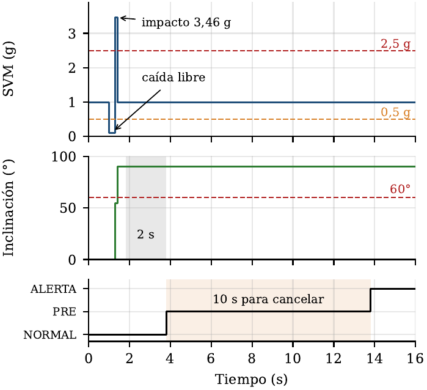
Figura original del equipo · algoritmo del firmware sobre el perfil de caída de Wokwi
Cada aviso se reconoce al tacto
tablero
Publica en un broker. El tablero se suscribe por WebSocket seguro.
{"estado":"ALERTA","dist":95,
"desnivel":false,"vbat":3.92}
{"tipo":"caida","lat":-12.13525,
"lon":-77.02215,"sats":8}
Broker público: sirve para demo, no para producto
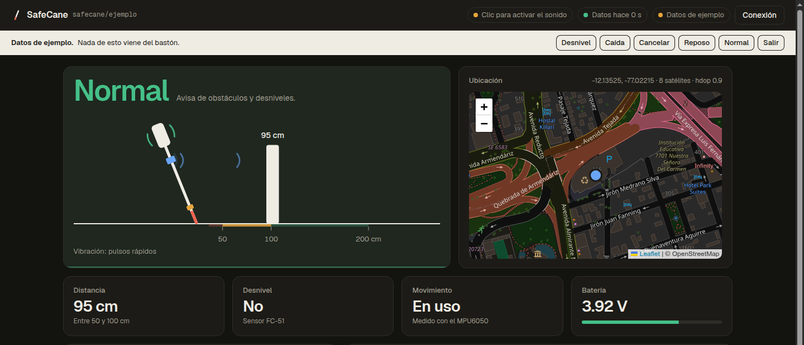
Tablero web en modo demostración (datos de ejemplo)
Pensados para la familia, no para técnicos.
Posición y satélites de cada alerta.
Historial y JSON crudo de MQTT.
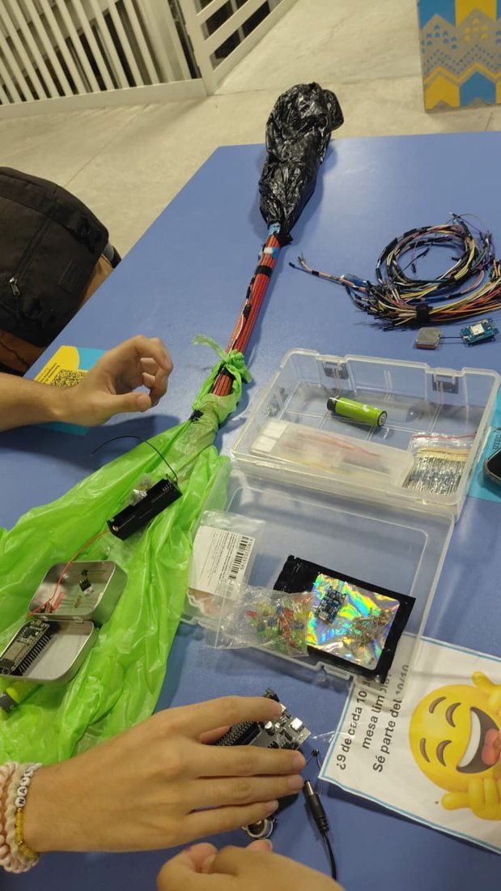
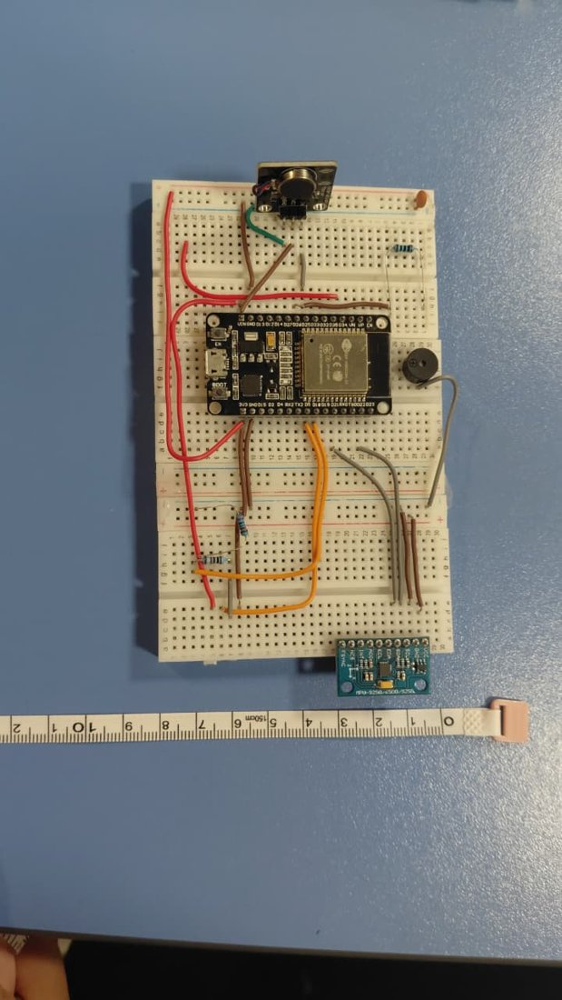
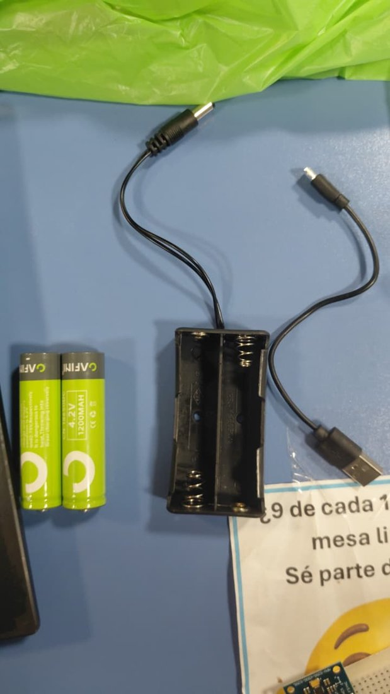
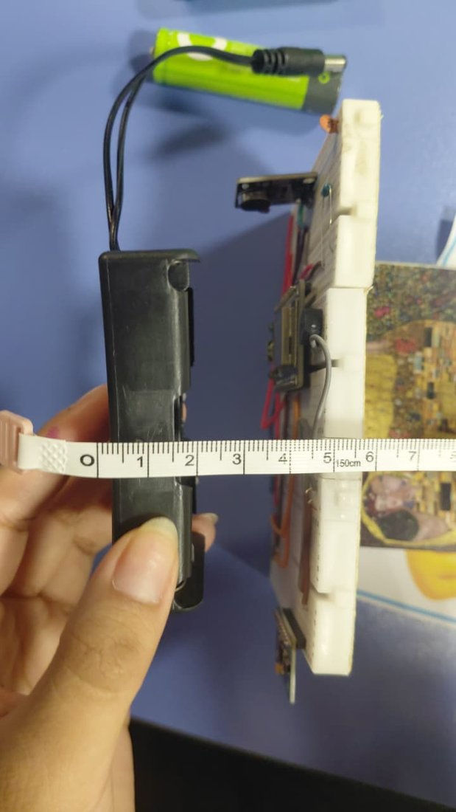
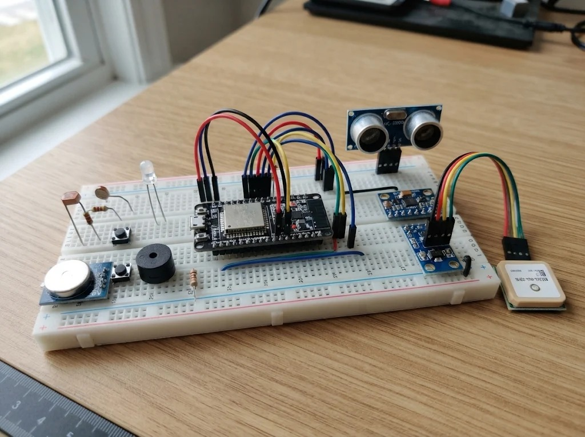
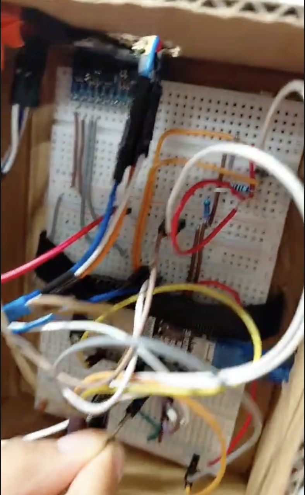
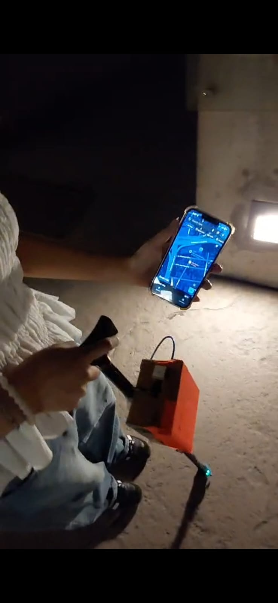
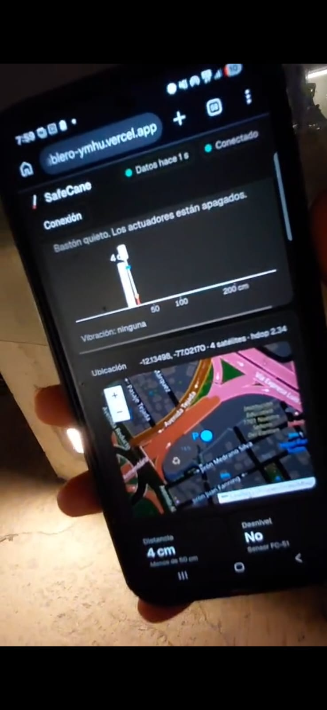
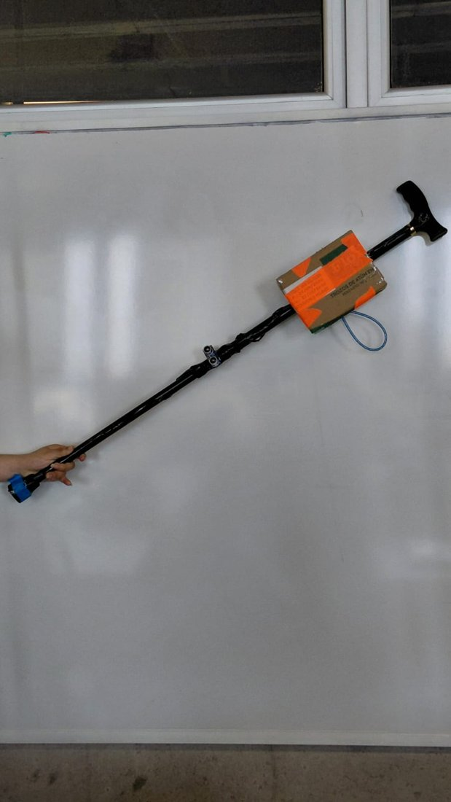
Demo
en vivo
Mira
el video
drive.google.com/drive/folders/1WJA_HcKRwQmqfS3C9hESu1fA0dY-oxfG
error de distancia
meta < 3 cm
cumple
escalones y bordillos
meta ≥ 85 %
cumple
sensibilidad en caídas
meta ≥ 80 %
cumple
error del GPS
ref. 4,63 m
cumple
latencia al tablero
meta < 5 s
en el límite
primer fix del GPS
meta < 2 min
no cumple
autonomía real
estimada 6 h
no cumple
del impacto a la alerta
remota
10 s de cancelación
de autonomía medida, frente a las 6 h estimadas con ~170 mA.
Celda 18650 + TP4056 con protección + elevador MT3608, y apagar el GPS sin alertas.
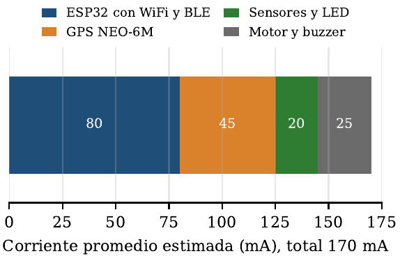
Figura original · consumo estimado por bloque: ESP32 y GPS suman casi tres cuartas partes
personas con discapacidad visual y adultos mayores que caminan solos. Quien compra suele ser la familia.
Segundo segmento: centros de rehabilitación, asociaciones, casas de reposo y municipios.
precio accesible, con componentes del mercado local
tablero, historial de alertas y mapa para la familia
panel multiusuario, capacitación y mantenimiento
Obstáculos, desniveles, caídas y ubicación, con componentes baratos de Lima.
Cubre lo que el ultrasonido no ve, bajo la punta.
La alerta local no depende de la red.
Umbrales con registros a 50 Hz; luego un clasificador.
Placa perforada o PCB, 18650 y conectores en las articulaciones.
La ubicación de una persona es un dato sensible.
Gracias
Un bastón que anticipa obstáculos, avisa de desniveles, detecta caídas y dice dónde ocurrieron.